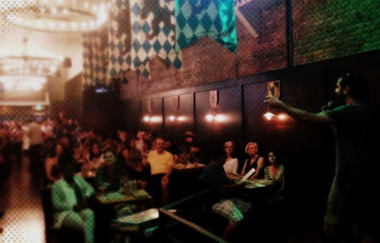
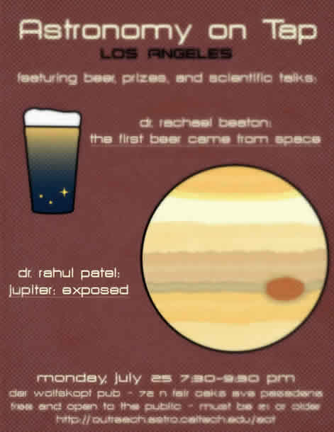
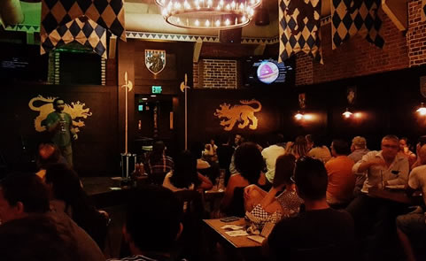

 Astronomy on Tap is a national and international outreach event that was started in NYC by Dr. Meg Schwamb. Each event is free to the public and constists of engaging astronomy presentations and games by professional astronomers to the public while they're enjoying they're favorite drink at a local bar. Astro on Tap is held in 15 locations in the US and around the world.
 Over the last year, I have been involved in/helping/aiding/etc in the events of Astronomy on Tap: Los Angeles , started by Dr. Cameron Hummels and hosted at Der Wolfskopf.
I have given a talk on the Juno Mission to Jupiter back in July 2016, shortly after the satellite arrived at the planet. I discussed the Jovian planet, what we know about it, what we still don't know (which is quite a bit). I then discussed how Juno — a NASA mission to the planet, launched 5 years ago and named after the Roman God's wife — will be able to reveal his secrets by peering deep into the thick clouds.
 I've helped out at a few other events throughout the year, as well as hosted the event during Cameron's absence. Each event is a lot of fun, and the number of participants has been ever steadily increasing! If you're in town, please do stop by!

Check out the pictures from some of the other Astro on Tap events over the last year!
Design by TEMPLATED and totally inspired and ripped off from Michael Zingale because I have no website creativity.